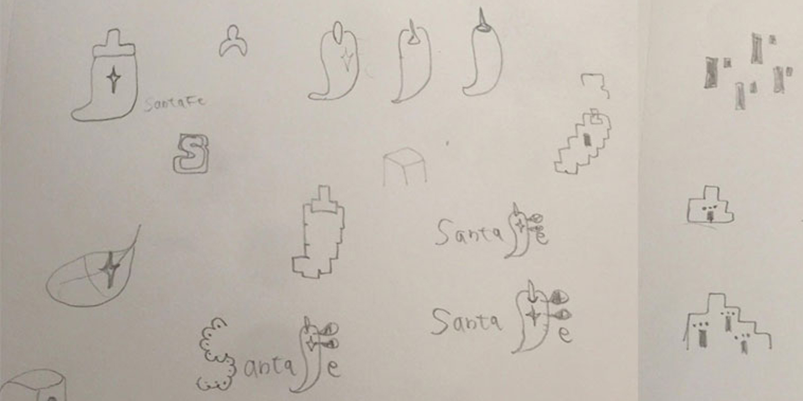

City Logo
Overview
This project required redesigning some city logos. I choose the New Mexico city of Santa Fe because this is my most favorite state so far. I wanted to put as many aspects that I felt there into a simple design to express their colorful features.
Sketching
Concept key word: Native American, Tribes, Spanish, Mexican, Old, Historic, Adobe buildings, Pueblo, Holy faith, Turquoise, Chille, Mingled with 3 barely well, Rounded, Doors, Cross, Silver hummered plate in the church
Design System
Typography

Typography: Santa fe is the second oldest inhabitedtown in The United States, founded in 1607, and is a popular tourist destination for art, history, and outdoor activities. The text uses a Sans Serif font to convey a nostalgic feeling in keeping with the historical roots of the city to Mexico and Spain. The color of Santa fe is Brownish black which represents the dirt of adobe building.
Logo Design

Shape and colors: In Santa Fe, the predominant architectural style is adobe brick. I provided rounded shapes that are reflective of this. In New Mexico, there are three prominent interlaced cultures: Spanish, Native American, and American. These are expressed in a triptych of shapes, in part referencing religion and Santa Fe’s translated meaning in Spanish as “holy faith.” A subtle negative-space cross shape is found on the right, signifying the rite of historical religious conquests that are both significant and controversial to the history of the people. The 3 colors represent local indigenous crop chili pepper, turquoise stone popular in jewelry, and brown earth used in adobe building.
Logo Exploration